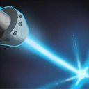
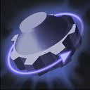

Скиллы Tinker
 Lazer- Наносит 75/150/225/300 чистого урона и ослепляет врага, заставляя его промахиватся 100% атак. В радиусе 250 от отсновной цели также наносится урон, но не вешается ослепление
 Heat-Seeking Missle- Выпускает в 2-х(3-х с талантом) случайных врагов в радиусе 2000 самонаводящиеся ракеты нанося 120/200/280/360 магического урона
Heat-Seeking Missle- Выпускает в 2-х(3-х с талантом) случайных врагов в радиусе 2000 самонаводящиеся ракеты нанося 120/200/280/360 магического урона
 Defence Matrix- Накладывает на себя или союзника счит, поглощающий 100/180/240/320(225/305/345/445 c талантом) урона. Также увиличивает сопротивление эффектам на 10/20/30/40%
Defence Matrix- Накладывает на себя или союзника счит, поглощающий 100/180/240/320(225/305/345/445 c талантом) урона. Также увиличивает сопротивление эффектам на 10/20/30/40%
 Keen Konveyance- Является ультом. Позволяет телепортироватся на башни/существа/героев в зависимости от уровни прокачки. Длительность телепортации равна 4,5/4/3 секнуды
Keen Konveyance- Является ультом. Позволяет телепортироватся на башни/существа/героев в зависимости от уровни прокачки. Длительность телепортации равна 4,5/4/3 секнуды
 Rearm- Является ультом. используется 3,25/2.25/1.25 секунд, перезаряжает все способности и почти все предметы. Если каст способности сбили, она уйдет в перезарядку